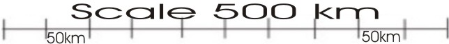
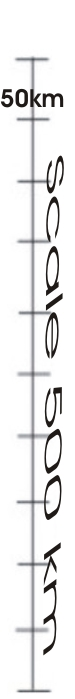

The compass remains pointing north as the map, say too the land. This
suggests it is in the right direction for you next location. Each town
you click from to the next will set the compass. When you walk on the
bearing you need the red arrow in the white hatching, a common feature
on compasses. Then you will also notice the dial which you swivel to
do this has a degree at the new (usually) longer centre of the the compass.
That is indicated. Additionally there is an adjustment setting to use to be
able to walk on true north, that is magnetic north as the map sees it.
This changes because that is how it is, plus (see below the map)
Click the dots (towns) to activate the compass and find out the location name. One click for the start point, one for the finish.
N
E
W
S

East Japan Tokyo/Chiba Saitama Area
Riyugasakishi
Minami Urawa
Narita
Takahatafudo
Tokyo
Wadaura

Tokyo Bay and the Pacific Ocean